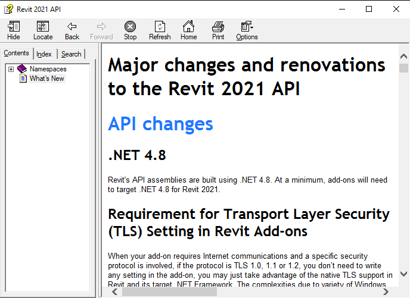

The Revit 2021 API includes exciting enhancements for add-in developers, including numerous developer wishes and requests that have now been explicitly addressed:
The information below is based on the contents of the Revit Platform API Changes and Additions.docx document included with
the Revit 2021 SDK, the software developers kit available from
the Revit Developer Centre.
It is also provided in the section on What's New in the Revit 2021 API help file RevitAPI.chm included with the SDK:

For convenient, easy and effective web searching, this blog post provides an online version of that information, both in pure HTML (below) and as a PDF document:
The What's New section and the Changes and Additions document provide important information, both for discovering and exploring the newly added API functionality and for later reference.
If you encounter any issues migrating your existing add-ins between different versions, this is one of the first places to look.
For detailed information on all other aspects of the Revit API, please refer to the rest of the API documentation and samples provided in the SDK.
The most important things to install and always keep at hand are:
The Revit API help file RevitAPI.chm
The Visual Studio solution containing all the SDK samples, Samples\SDKSamples.sln
You will need both of these regularly for research on how to solve specific Revit API programming tasks.
At a minimum, add-ons will need to target .NET 4.8 for Revit 2021.
1.2. Requirement for Transport Layer Security (TLS) Setting in Revit Add-ons
When your add-on requires Internet communications and a specific security protocol is involved, if the protocol is TLS 1.0, 1.1 or 1.2, you don’t need to write any setting in the add-on, you may just take advantage of the native TLS support in Revit and its target .NET Framework. The complexities due to variety of Windows versions as well as .NET Framework versions have been well handled in Revit.
If the addon still needs to specify a security protocol or its version, do not hard-code it exclusively, e.g. by directly assigning the protocol/version to the application-wide property ServicePointManager.SecurityProtocol. This will override Revit’s native TLS configuration, which is critical for Revit to communicate with various Autodesk cloud services. A problematic setting is like
Instead you need to specify the protocol/version inclusively, e.g. by using bitwise OR (logical OR) on the application-wide property ServicePointManager.SecurityProtocol. A correct setting is like
Revit has converted to use an external reference to unit definitions defined in Forge schemas.
In the Autodesk.Revit.DB namespace, the enumerations DisplayUnitType, UnitSymbolType, and UnitType have been deprecated in favor of a potentially extensible set of units, symbols, and unit types. The new class:
Autodesk.Revit.DB.ForgeTypeId
represents an identifier for a unit, symbol, or other object, and is now used throughout the Revit API to identify units of measurement, symbols, and unit types. Unit types are now referred to as "specs" to avoid confusion with units themselves.
A ForgeTypeId instance holds a string, called a "typeid", that uniquely identifies a Forge schema. A Forge schema is a JSON document describing a data structure, supporting data interchange between applications. A typeid string includes a namespace and version number and may look something like "autodesk.spec.aec:length-1.0.0" or "autodesk.unit.unit:meters-1.0.0". By default, comparison of ForgeTypeId values in the Revit API ignores the version number.
The new classes:
Autodesk.Revit.DB.UnitTypeId
Autodesk.Revit.DB.SymbolTypeId
Autodesk.Revit.DB.SpecTypeId
contain a default set of named public constant properties of type ForgeTypeId. These values can be used in code replacing values of the deprecated DisplayUnitType, UnitSymbolType, and UnitType enumerations.
For example, where you previously used DisplayUnitType.DUT_WATTS_PER_SQUARE_METER_KELVIN, you would now use UnitTypeId.WattsPerSquareMeterKelvin. Where you previously used UnitType.UT_HVAC_Density, you would now use SpecTypeId.HvacDensity.
The UnitUtils class now offers a set of new methods for mapping between enumeration values and ForgeTypeId values to assist clients in migrating code to ForgeTypeId:
UnitUtils.IsSymbol()
UnitUtils.GetSpecTypeId()
UnitUtils.GetUnitType()
UnitUtils.GetUnitTypeId()
UnitUtils.GetDisplayUnitType()
UnitUtils.GetSymbolTypeId()
UnitUtils.GetUnitSymbolType()
Some of the preceding methods are new but are already deprecated. They have been added to the API only to assist clients in migrating code from the old enumerations to the ForgeTypeId class.
1.3.1. List of deprecated and replaced APIs related to units
StructuralConnectionHandler.Create(Document, IList<ElementId>) → StructuralConnectionHandler.CreateGenericConnection() – The new method provides an easier and friendlier way to create a generic connection.
1.5. Electrical API changes
Deprecated member → Replacement – Notes
MEPModel.ElectricalSystems → MEPModel.GetElectricalSystems() – The new method returns an ISet<> containing the systems.
MEPModel.AssignedElectricalSystems → MEPModel.GetAssignedElectricalSystems() – The new method returns an ISet<> containing the systems.
ElectricalSystemSet → N/A – new methods will use .NET collections
ElectricalSystemSetIterator → N/A – new methods will use .NET collections
ModelPathUtils.ConvertCloudGUIDsToCloudPath (Guid, Guid) → ModelPathUtils.ConvertCloudGUIDsToCloudPath (string region, Guid, Guid) – The new method provides an extra argument to indicate the region of the model to open.
Document.SaveAsCloudModel (string, string) → Document.SaveAsCloudModel (Guid accountId, Guid projectId, string, string) – The new method provides two extra arguments to make identifying the cloud location more efficient and reliable.
1.7. Raytrace view mode removed
The Raytrace view mode is no longer available.
The following two enum values have been removed (with no replacement):
DisplayStyle.Raytrace
TemporaryViewMode.Raytrace
1.8. Schedule API change
The method
ViewSchedule.ExportSchedule()
now exports a text filed formatted in UTF8 (it was previously UNICODE) for better scalability and a more modern text format.
1.9. Slanted Walls
Standard walls can now be slanted.
There is no special API for this – use the standard parameter API to access the properties that control the slanted.
API code should no longer assume that standard walls (or their inserts) are vertical.
Three new parameters have been added:
BuiltInParameter.WALL_CROSS_SECTION – An integer that controls whether the wall is vertical (0) or slanted (1).
BuiltInParameter.WALL_SINGLE_SLANT_ANGLE_FROM_VERTICAL – A double that controls the angle of the slant relative to vertical, in degrees. The sign of the angle is positive in the direction to the right of the direction of the path curve of the wall, independent of how the wall is flipped.
BuiltInParameter.INSERT_ORIENTATION – An integer that controls whether an insert in a wall is vertical (0) or follows the slant of the wall (1).
Several members have been deprecated and replaced with new methods that use the new ImageTypeSource enumeration.
Replaced member → Replacement
ImageType.IsViewImage and ImageType.IsLoadedFromFile() → ImageType.Source
ImageTypeOptions(), ImageTypeOptions(string) and ImageTypeOptions(string, bool) → ImageTypeOptions(string, bool, ImageTypeSource) or ImageTypeOptions(ExternalResourceReference, ImageTypeSource)
1.16. Obsolete API removal
The following API members and classes which had previously been marked Obsolete have been removed in this release. Consult the API documentation from prior releases for information on the replacements to use:
1.16.1.1. Classes
Autodesk.Revit.DB.ImageImportOptions
1.16.1.2. Methods
Document.Import(String, ImageImportOptions, View, out Element)
represents an HVAC analytical system element where the air or water is circulated to satisfy building energy requirements.
Its AnalyticalSystemDomain property indicates whether the element represents a water loop or air system.
The new class:
Autodesk.Revit.DB.Mechanical.WaterLoopData
contains the data for a water loop system. It can be obtained from the MEPAnalyticalSystem.GetWaterLoopData() method. It offers the following properties:
WaterLoopData.WaterLoopType
WaterLoopData.ChillerType
WaterLoopData.CondenserWaterLoopId
The new class:
Autodesk.Revit.DB.Mechanical.AirSystemData
contains the data for an air system.
It can be obtained from the MEPAnalyticalSystem.GetAirSystemData() method.
It offers the following properties:
AirSystemData.HeatExchangerType
AirSystemData.PreheatCoilType
AirSystemData.HeatingCoilType
AirSystemData.AirSystemCoolingCoilType
AirSystemData.AirFanType
2.1.2. Zone equipment
The new class:
Autodesk.Revit.DB.Mechanical.ZoneEquipment
represents a zone equipment element used for Mechanical Systems Analysis.
Zone equipment is an early-stage equipment placeholder that provides heating or cooling to part of the air system or water loop.
One zone equipment element may be mapped to multiple pieces of physical equipment depending on the zoning behavior type.
Analytical spaces may be associated to one or more zone equipment elements. The method:
ZoneEquipment.MoveSpaceToEquipment()
moves a set of spaces from the original zone equipment to the targeted zone equipment. Either zone equipment id may be InvalidElementId. If the original is InvalidElementId, the association is copied to the target zone equipment. If the target is InvalidElementId, the original association is removed. The method:
ZoneEquipment.GetAssociatedZoneEquipment()
returns the set of zone equipment that is associated with the specified analytical space or spaces.
The new class
Autodesk.Revit.DB.Mechanical.ZoneEquipmentData
represents the data associated with a zone equipment. It can be obtained from the ZoneEquipment.GetZoneEquipmentData() method. It offers the following properties:
ZoneEquipmentData.EquipmentType
ZoneEquipmentData.EquipmentBehavior
ZoneEquipmentData.HotWaterLoopId
ZoneEquipmentData.ChilledWaterLoopId
ZoneEquipmentData.AirSystemId
2.1.3. System-Zones
A system-zone in Revit is used to specify what parts of a building are served by specific equipment, air systems and water loops, without having to physically model them. In the Revit API, a system-zone is represented as a GenericZone element with a domain data of type SystemZoneData.
The new class
Autodesk.Revit.DB.GenericZone
provides for a method of selecting elements that somehow come in contact with the zone object. A zone is a non-hierarchical structure of geometric information, area or volume definitions for the purpose of analysis. A generic zone will contain specific domain requirements provided at creation of the element. Currently, all GenericZones will represent system-zone elements used for MEP design. Some relevant new members of GenericZones include:
GenericZone.Create(Document doc, String name, GenericZoneDomainData domainData, ElementId levelId, IList<CurveLoop> curves) – supports creation of a zone using the specified domain data, level and curves to represent the intersection/outline of the related spaces.
GenericZone.GetBoundaries() – Gets the boundaries for the given GenericZone.
GenericZone.GetDomainData() – Returns the domain data for the given GenericZone.
For system-zone elements, the domain data will be an instance of the new class:
Autodesk.Revit.DB.SystemZoneData
This data includes a reference to the zone equipment for the spaces in this system-zone:
represents a view instance of the systems analysis report. In a typical API workflow, to run a systems analysis against a Revit project, create (via ViewSystemsAnalysisReport.Create()) a new view instance and request (via ViewSystemsAnalysisReport.RequestSystemsAnalysis()) the systems analysis from that view. The analysis will run in the background, and when the analysis is completed, the related views are automatically updated. The method RequestSystemsAnalysis.IsAnalysisCompleted indicates if the background systems analysis has completed or not.
It is possible for a project to contain multiple systems analysis reports. The method:
returns the latest report of systems analysis. The peak heating/cooling loads of all EnergyAnalysisSpace elements should be consistent with this latest report.
The new class
Autodesk.Revit.DB.Analysis.SystemsAnalysisOptions
contains some properties (e.g., WeatherFile, WorkflowFile, and OutputFolder) that affect the systems analysis. It is okay to leave some parameters empty. In those cases, the analysis will take the default value from the ViewSystemsAnalsisReport element. The weather file affects the results of energy simulation. More weather files are available at http://energyplus.net/weather .
2.1.5. Export to gbXML
The new property:
GBXMLExportOptions.ExportAnalyticalSystems
should be set to true to export the analytical system related items when exporting to gbXML.
2.1.6. Application settings
The new methods:
Application.GetSystemsAnalysisWorkflowNames()
Application.GetSystemsAnalysisWorkflows()
Application.SetSystemsAnalysisWorkflows()
allow you to read and specify the name and path information names for systems analysis workflows.
2.2. Electrical API additions
2.2.1. Circuit naming
The new class:
Autodesk.Revit.DB.Electrical.CircuitNamingScheme
represents a scheme used for electrical circuit naming. The most significant new methods on this class include:
CircuitNamingScheme.Create()
CircuitNamingScheme.GetCombinedParameters()
CircuitNamingScheme.SetCombinedParameters()
allowing schemes to be created, and allowing access to the list of combined parameters associated with the scheme.
2.2.2. Access to circuit naming, switchboards and other properties
Several new properties and methods have been added to support access to circuit naming information on a variety of elements:
ElectricalSetting.GetCircuitNamingSchemeSettings() – Gets the circuit naming scheme settings of the project.
ElectricalSystem.SlotIndex – The Slots where the Electrical System is located in its panel.
ElectricalSystem.CircuitNamingIndex – The Circuit Naming Index where the Electrical System is located in its panel.
ElectricalSystem.PhaseLabel – The circuit phase label used in the Electrical System.
ElectricalSystem.Ways – The circuit ways used in the Electrical System.
ElectricalSystem.LoadClassificationAbbreviations – The LoadClassification Abbreviations used in the Electrical System.
ElectricalLoadClassification.Abbreviation – The abbreviation of the load classification name.
ElectricalEquipment.CircuitNamingSchemeId – The CircuitNamingSchemeId used in the Electrical Equipment.
ElectricalEquipment.IsValidDistributionSystem() – Verifies that the Distribution System can be assigned to the Electrical Equipment.
ElectricalEquipment.IsValidCircuitNamingSchemeId() – Verifies that the circuit naming scheme id can be used with Electrical Equipment.
ElectricalEquipment.GetCircuitNamingSchemeType() – Gets enumerated type of the circuit naming scheme used with Electrical Equipment.
ElectricalEquipment.SetCircuitNamingSchemeType() – Sets the circuit naming scheme for Electrical Equipment.
PanelScheduleView.RenumberIndexes() – Renumbers the Circuit Naming Index for the circuits in the panel.
ElectricalEquipment.MaxNumberOfCircuits – The maximum number of circuits for switchboard.
ElectricalEquipment.IsSwitchboard() – Verifies that the electrical equipment is a switchboard.
PanelScheduleView.SwitchPhases() – Switches the circuit phases at the slot.
ElectricalSystem.Frame – Retrieves the Frame value of the Electrical System.
PanelScheduleData.IsUnusedPhaseHidden – True if the user wishes to hide the unused phase column of a single phase panel, false otherwise.
2.3. Element and ElementFilter additions
2.3.1. Element History
The new property:
Element.VersionGuid
gets an element version Guid that can be used to see whether this element has changed compared to the previous saved or synchronized version of the document.
2.3.2. Element Filters
Two new element filter classes have been added for use in FilteredElementCollector and other tools leveraging ElementFilter classes.
The new class:
Autodesk.Revit.DB.ElementIdSetFilter
is a quick filter wrapping a set of element ids.
The new class:
Autodesk.Revit.DB.VisibleInViewFilter
is a quick filter that passes elements that are most likely visible in the given view.
2.4. Document API additions
Two new document events provide additional flexibility to react when a document is reloaded:
Application.DocumentReloadingLatest
Application.DocumentReloadedLatest
Subscribers to these events will be provided an argument object containing the path to the central model. Document changes are permitting during both events.
2.5. View API additions
2.5.1. Split sections
The new methods:
DBViewSection.IsSplitSection()
ViewCropRegionShapeManager.GetSplitRegionOffset()
identify if a section view is split, and return the offset for the specified split crop region.
2.5.2. Temporary View Modes
The Revit API now allows customization to create "custom temporary view modes" applied to a view as a temporary view property.
For this release, the "Reveal Obstacles for Path of Travel" temporary mode is implemented this way. It uses the Analysis Visualization Framework (AVF) to display additional graphics on top of the view contents.
The new properties:
TemporaryViewModes.CustomTitle
TemporaryViewModes.CustomColor
TemporaryViewModes.ResetCustomization()
TemporaryViewModes.IsCustomized()
provide access to read and modify a custom temporary view mode. CustomTitle should be set to cause the view to display the customized frame. The application is responsible to adjust the appearance of elements in the view related to the mode.
2.5.3. Filters
The new methods:
View.GetIsFilterEnabled()
View.SetIsFilterEnabled()
identify or set if the filter is enabled in this view.
The new method:
View.GetOrderedFilters()
gets the filters applied to the view in the order they are applied.
2.6. Schedule API additions
2.6.1. Striped rows
The new properties:
ViewSchedule.HasStripedRows
ViewSchedule.UseStripedRowsOnSheets
provides access to read or set if a given schedule is using a striped row display, and whether that display will be used on a sheet that displays this schedule.
The new methods:
ViewSchedule.GetStripedRowsColor()
ViewSchedule.SetStripedRowsColor()
get and set the color applied to the indicated part of the pattern for a schedule with striped rows.
2.6.2. Frozen header
The new property:
ViewSchedule.IsHeaderFrozen
provides access to read or set if the header is frozen on a given schedule.
2.7. Path of Travel API
2.7.1. Reveal Obstacles mode for Path of Travel
The Reveal Obstacles view mode highlights elements in the plan view when those elements will act as obstacles for the current Path of Travel calculation settings. The new methods:
PathOfTravel.IsInRevealObstaclesMode()
PathOfTravel.SetRevealObstaclesMode()
provide access to read or set if a view is displaying this mode.
For a floor plan view, calculates paths from points inside rooms to the closest of the destinations.
Returns the start points of the longest path(s). If multiple paths have the same longest length, returns multiple start points.
The entire plan is divided in small tiles, and the distance to the closest destination point is calculated for each tile center point. Only tile center points that are located in rooms in the view are taken into account.
For a floor plan view, calculates paths from each start point to its closest destinations.
Returns the path, represented by an array of XYZ points.
The calculation is done in a floor plan with one or more destinationPoints and one or more startPoints.
The shortest path is calculated from each start point to its closest destination point.
2.7.3. Waypoints
The new methods:
PathOfTravel.GetWaypoints()
PathOfTravel.InsertWaypoint()
PathOfTravel.SetWaypoint()
PathOfTravel.RemoveWaypoint()
provide access to read and modify the waypoints associated to a particular PathOfTravel element. Waypoints force the path of travel calculation to ensure that the path includes each of the specified points, in the order specified, between the start and end points.
to be notified when Revit is just about to export, or has just exported, one or more views of the document via an export context by CustomExporter.
Handlers of this event are permitted to make modifications to any document (including the active document), except for documents that are currently in read-only mode.
Several new methods and properties have also been added to ImageType:
ImageType.Source – Indicates how the image is created (as a link, import, or internally-generated image)
ImageType.Status – Indicates whether the image is loaded or unloaded (if applicable)
ImageType.Unload() – Unloads a linked image
The new enumeration:
ImageTypeStatus
contains possible values for the load status of an ImageType.
2.12. Cloud Model API additions
2.12.1. Regions
The new property:
ModelPath.Region
returns the region of the BIM 360 account and project which contains this model.
The new static properties:
ModelPathUtils.CloudRegionUS
ModelPathUtils.CloudRegionEMEA
return the region names of different BIM 360 cloud services. They can be used as the first argument of the ModelPathUtils.ConvertCloudGUIDsToCloudPath() method.
2.12.2. Opening Cloud Models
The new enumeration value:
OpenConflictScenario.VersionArchived
indicates that last central version merged into the local model to open has been archived in the central model.
The new enumeration value:
OpenConflictResult.DetachFromCentral
provides the option to detach the local model from its central model, with worksets preserved.
2.13. Structural Connection API addition
2.13.1. Connections requiring additional points
The new class:
Autodesk.Revit.DB.Structure.ConnectionInputPoint
contains the 3D location and unique id for one structural connection input point.
contains information about connection input points requirements, such as number of required points, a user visible description for each point, and potential location restrictions.
These methods return all possible RebarConstraints that could be used for a RebarConstrainedHandle related to the additional input. For free form rebar these will return an empty list.
2.14.2. Rebar end treatment
The new method:
Rebar.SetEndTreatmentTypeId()
sets the id of the EndTreatmentType to be applied to the rebar at the specified end.
2.14.3. Fabric Sheet visibility
The new methods:
FabricSheet.IsSolidInView()
FabricSheet.SetSolidInView()
FabricSheet.IsUnobscuredInView()
FabricSheet.SetUnobscuredInView()
get and set the visibility options for a given fabric sheet instance as applied to a particular 3D view.
2.14.4. Out of plane hook rotation angles
Several new static creation methods take into account the out of plane hook rotation angle and the end treatment type id:
static Rebar.CreateFromCurves() – Creates a new instance of a shape driven Rebar element within the project, given an array of curves and properties.
static Rebar.CreateFromCurvesAndShape() – Creates a new instance of a shape driven Rebar element within the project, given an array of curves, a RebarShape and some properties.
static Rebar.RebarShapeMatchesCurvesHooksAndEndTreatment() – Checks if rebarShape matches curves, hooks and end treatment.
static RebarShape.Create() – Creates a new instance of a RebarShape, which defines the shape of a Rebar.
The following methods allow getting or setting the out of plan hook rotation angle:
Rebar.GetHookRotationAngle()
Rebar.SetHookRotationAngle()
RebarShape.GetHookRotationAngle()
RebarShape.SetHookRotationAngle()
These methods all affect the angle at the specified end.
2.14.5. Hook length overrides
The following new Rebar methods enable overriding the hook length from the API:
Rebar.EnableHookLengthOverride()
Rebar.IsHookLengthOverrideEnabled()
Rebar.GetOverridableHookParameters() – Outputs the formula parameter ids defined in the RebarShape family which are associated with hook length and hook tangent length parameters.
2.15. Material API addition
The new property:
StructuralAsset.MetalThermallyTreated
indicates whether the asset describes a material that is thermally treated or not, corresponding to the BuiltInParameter member PHY_MATERIAL_PARAM_STRUCTURAL_THERMAL_TREATED.
2.16. Analysis Visualization Framework API addition
The new property:
SpatialFieldManager.AllowInteractiveSettings
toggles the ability to access the Analysis Visualization Framework (AVF) settings for a particular set of results. This property is true by default. If the property is set to false, all AVF dialogs are unreachable in the UI.
Also, if the property is set to false, deletion of the SpatialFieldManager, its parts or associated AnalysisDisplayLegend element is prohibited.
2.17. Shared Coordinates API additions
2.17.1. Internal Origin
The new class:
Autodesk.Revit.DB.InternalOrigin
represents the origin of Revit's internal coordinate system. Each Revit project contains one InternalOrigin.
It has the following members:
static InternalOrigin.Get(Document doc) – Returns the internal origin of the project. There is one InternalOrigin per document.
InternalOrigin.Position – Read-only property which returns the XYZ value of the internal coordinates.
InternalOrigin.SharedPosition – Read-only property which returns the shared position of the internal origin based on the active ProjectLocation of its Document.
2.17.2. BasePoint
Two new methods provide access to the base and survey point: